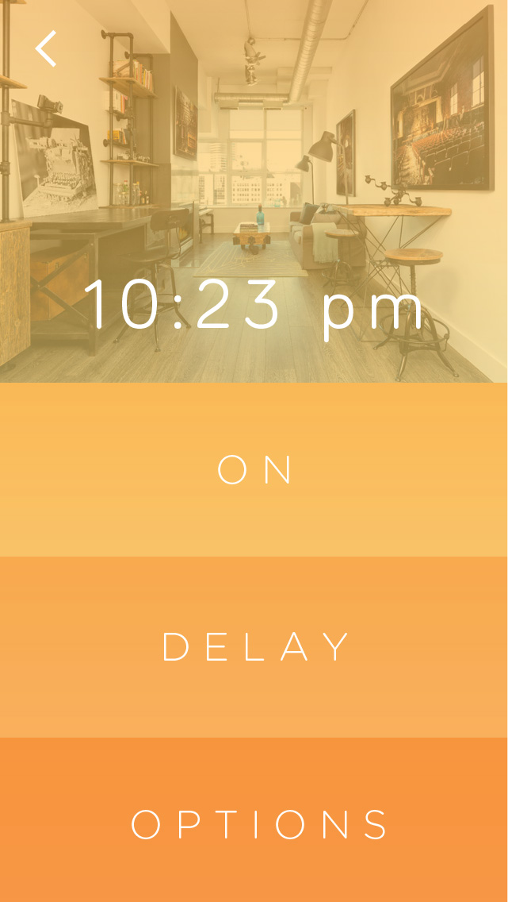
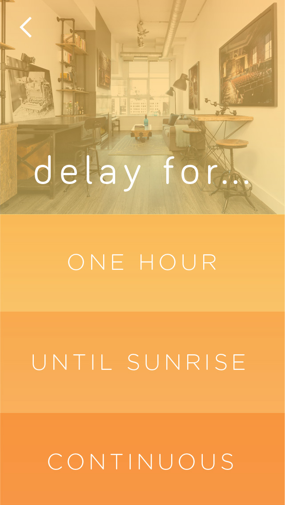
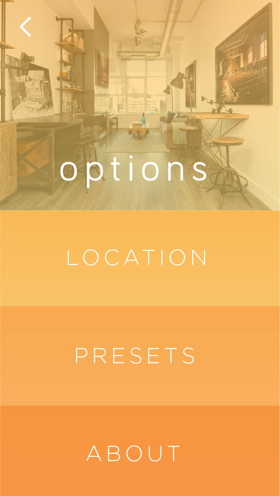
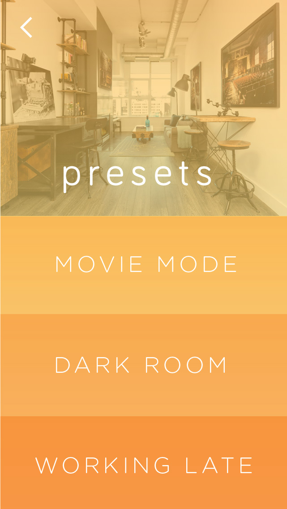
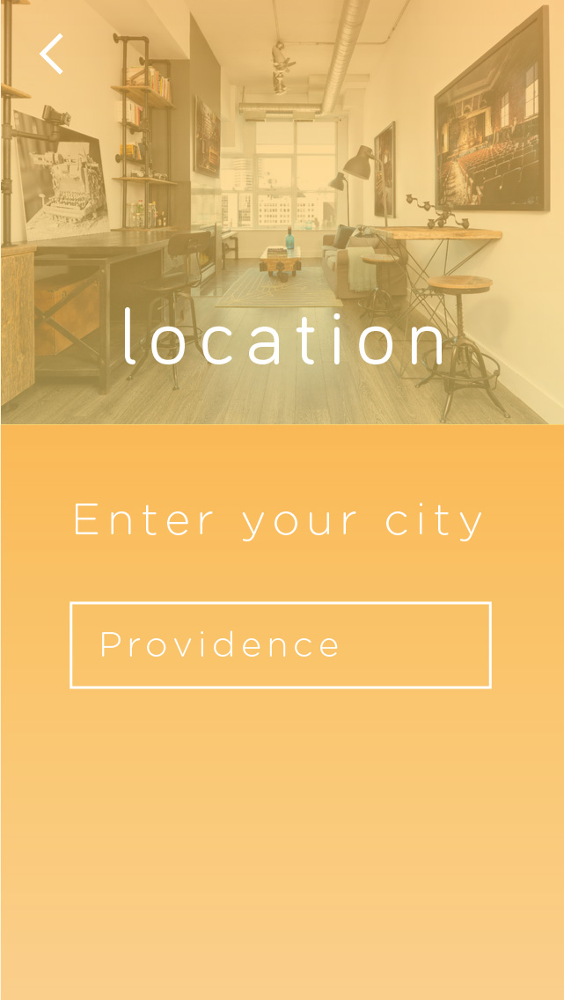

{kind=link}






View the full presentation here.
How can I create an effective ambient light that is conducive for a working environment and minimizes the side effects of working late?
By creating a light that adapts to the amount of light in a room at any given time (ultimately reducing overstimulation to blue light), a working environment can be less harmful to one's health.
Cool Light
Melatonin Disruption - An excess of cool light decreases melatonin production and causes delays in circadian rhythms (sleep cycles)
Eye Strain - Overexposure cool light causes retinal fatigue and long-term damage
Warmth - Warm light has been associated with the warmth of a fire, providing a sense of security and a creates a welcoming feeling
By creating a lighting system, the dispersal of light will be optimal. With the use of ambient light sensors and GPS tracking, the color temperature and brightness of the light should be able to automatically adjust. Coincidentally, the light can be manually adjust via a phone application.
Organic
Seamless
Ambient
Modern
Professional
Home
With the app integration, the lamp can be controlled by any mobile device and facilitates mobility of the light and its features.